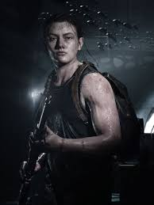

The last of us 2
The Last of Us Part II é um aclamado jogo de ação e aventura desenvolvido pela Naughty Dog, conhecido por sua narrativa intensa e foco nos temas de vingança e perdão. O jogo está disponível para PlayStation 4, com uma versão remasterizada para PlayStation 5 e PC.
Cinco anos após os eventos do primeiro jogo, Joel e Ellie estão estabelecidos na comunidade de sobreviventes de Jackson, Wyoming, desfrutando de um período de paz relativa. No entanto, essa paz é brutalmente interrompida por um evento violento, que desencadeia a jornada de Ellie em busca de justiça e vingança. A história se desenrola através das perspectivas de duas personagens principais, Ellie e Abby, uma nova personagem central em busca de sua própria forma de justiça. O jogo explora o ciclo de violência e as consequências emocionais devastadoras das ações de cada uma, desafiando as noções de certo e errado, bem e mal, e herói e vilão.O jogo apresenta uma jogabilidade imersiva de ação e sobrevivência, com combate corpo a corpo de alta intensidade, movimentos fluidos e ações furtivas dinâmicas. Os jogadores podem personalizar as habilidades de Ellie e Abby com uma ampla variedade de armas, itens de criação e melhorias. A versão Remastered para PlayStation 5 e PC introduz recursos adicionais, como o modo de sobrevivência roguelike "Sem Volta", níveis perdidos em estágios iniciais de desenvolvimento com comentários dos criadores, e um modo de tocar violão livremente.
personagens:
Ellie Williams: é a protagonista jogável, movida por uma intensa busca por vingança após a morte brutal de Joel Miller, figura paterna que salvou sua vida. Agora com 19 anos, ela é mais madura, fria e experiente, enfrentando traumas e conflitos morais em um mundo pós-apocalíptico. A jornada explora a mágoa de Ellie em relação a Joel, sua relação com Dina e sua caçada implacável contra Abby, que resultou no custo de sua paz e humanidade. Ellie abandona sua vida em Jackson, Wyoming, e se torna uma figura impiedosa, utilizando métodos brutais de sobrevivência e combate contra membros do WLF e Serafitas. A personagem carrega a culpa do sobrevivente e lida com o desejo de vingança em contraste com a vontade de construir um futuro. Ellie apresenta agilidade, capacidade de rastejar, esquivar e usar sua faca de forma furtiva, sendo capaz de eliminar estaladores em silêncio. A história foca intensamente no amor e laços de Ellie com Dina e seu relacionamento complexo com Joel, além da rivalidade com Abby. Ashley Johnson é a atriz que deu voz e captura de movimentos para a personagem nos jogos.
Abby Anderson: é uma das protagonistas jogáveis em The Last of Us Part II (2020), desenvolvida pela Naughty Dog. Como ex-integrante dos Vagalumes e soldado da WLF, ela busca vingar a morte de seu pai, Jerry, matando Joel Miller. Sua história foca em temas de vingança, redenção e empatia, explorando dilemas morais e seu relacionamento com Lev e Yara. Filha de Jerry Anderson, o cirurgião dos Vagalumes que Joel matou no final do primeiro jogo para salvar Ellie. Motivada pelo trauma, Abby treinou intensamente para se tornar uma soldado de elite da WLF (Frente de Libertação de Washington) em Seattle, com o único objetivo de caçar e matar Joel. Após realizar sua vingança, ela entra em um arco de transformação ao proteger Lev e Yara, dois jovens desertores dos Serafitas (inimigos da WLF), o que espelha a jornada de Joel e Ellie.
Joel Miller: Joel Miller é brutalmente assassinado por Abby Anderson no início do jogo, um evento central que impulsiona a jornada de vingança de Ellie. A morte de Joel é retratada de forma sem cerimônia, servindo para destacar as consequências de suas ações passadas no primeiro jogo, onde ele matou o pai de Abby para salvar Ellie. Embora Joel morra cedo, ele continua sendo uma figura central através de memórias de Ellie que detalham os quatro anos de convivência em Jackson. Um flashback memorável mostra Joel levando Ellie a um museu abandonado para comemorar seu aniversário, presenteando-a com uma fita de áudio de um lançamento espacial. Outros flashbacks mostram a tensão crescente quando Ellie descobre que Joel mentiu sobre o que aconteceu no hospital de Salt Lake City. A cena final do jogo revela uma conversa na varanda na noite anterior à sua morte, onde Ellie expressa o desejo de tentar perdoá-lo, oferecendo um fechamento emocional ao relacionamento deles.
Tutorial:
Para zerar The Last of Us Part II, você deve completar os 46 capítulos da campanha principal, divididos em 11 atos. O tempo médio de jogo é de 25 a 30 horas.
1-Foco na Exploração e Recursos:
O jogo recompensa a exploração minuciosa. Vasculhe cada gaveta e prateleira para encontrar:
- Suplementos (Pílulas): Melhoram habilidades como velocidade de cura e escuta.
- Peças: Necessárias em bancadas para melhorar o recuo, mira e dano das armas.
- Manuais de Treinamento: Desbloqueiam novas árvores de habilidades essenciais.
2-Combate e Furtividade:
- Esquiva é Vital: Aprenda o tempo correto do botão L1. Em dificuldades maiores, errar uma esquiva pode ser fatal.
- Furtividade (Stealth): Sempre que possível, elimine inimigos silenciosamente usando a faca (Ellie) ou canivetes fabricados (Abby). Isso economiza munição preciosa.
- Deitar no chão: Você pode se esconder em gramas altas ficando de bruços (segurando Círculo). Isso reduz drasticamente sua visibilidade.
3-Gerenciamento de Inventário:
- Priorize a fabricação de Kits Médicos e Bombas de Fumaça/Molotovs.
- Não economize demais: se encontrar recursos e seu inventário estiver cheio, fabrique itens para abrir espaço para novos materiais.
4-Dicas para Colecionáveis e Troféus:
- Cofres: As combinações geralmente estão em bilhetes próximos. Você pode consultar a lista de códigos de cofres no IGN.
- Cartas de Baralho (Ellie) e Moedas (Abby): São os principais itens colecionáveis espalhados pelo mundo.
Vídeo: